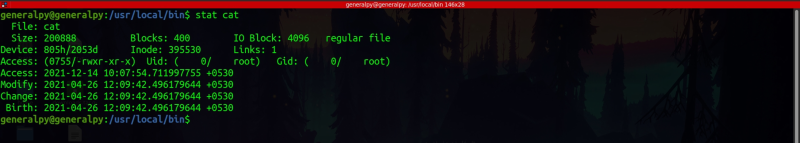

Let's first talk about command execution permission levels.
In linux, when commands are executed, they are run by privileges of user executing them instead of owner's permissions. For eg, above is binary for cat command which has owner root. If command is run by any other user than root, the command will be run by user's privileges. Like when we try to access some file like /etc/shadow, which can only be seen by root, cat will give permission denied error for other users . This is like a security feature, which if wasn't there, could have caused a lot of probems. But there are some situations like changing password, which require access of shadow file, so according to above architecture, simple user cannot change password. In situation like these, we need to run commands as root whatever the user is.
Appart from r,w and x there are 3 special types of permissions, which do not apply to any category like user group or others but for file or directory overall. These permissions are SUID(Set user ID), SGID(Set group ID) and Sticky Bit.
If a file has SUID set, then it will be run by privileges of its owner instead of user running it.
We can set SUID of any file in 2 ways :
chmod 4xxx file
chmod u+s file

In output of stat, we can see that access of file is 0755. Here 0 shows holds special permissions like suid , sgid etc.
Note how we are able to access shadow file after setting SUID. In symbolic representation, s is shown in place of x in user's column to show that SUID is set. If file has no executable permission, there will be a S set instead.
It is not recommended to set SUID as files become vulnerable and attackers can exploit this easily.
Passwd binary also has SUID set.
These binaries are have SUID set.